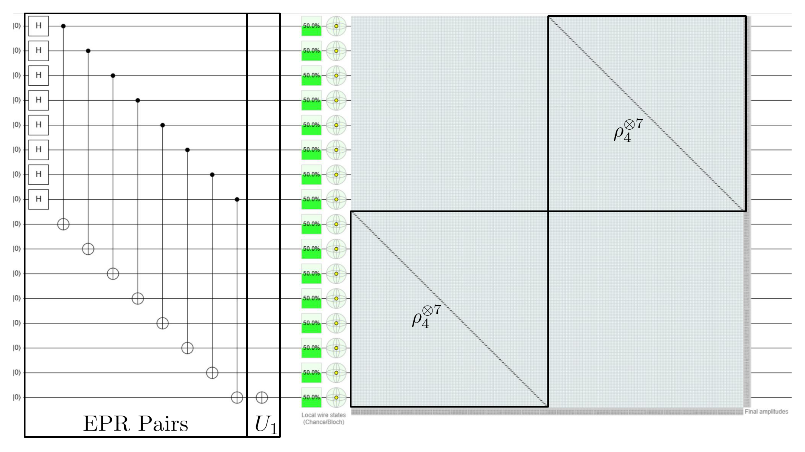
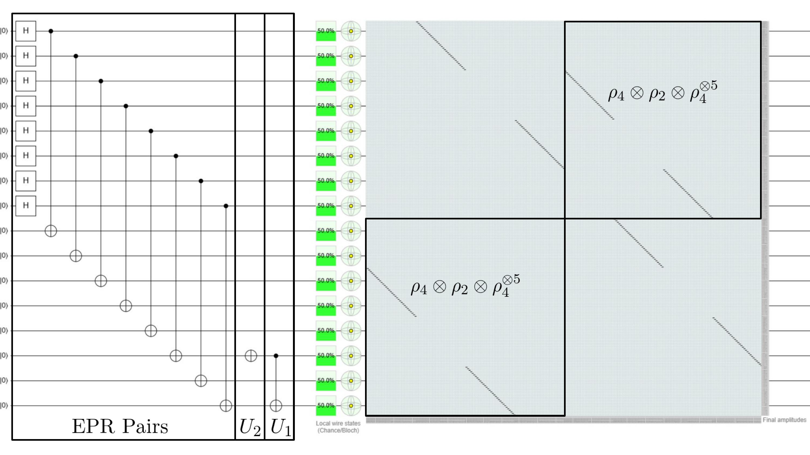
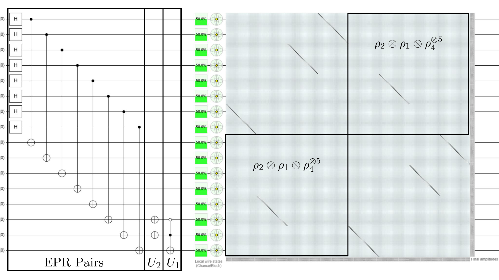

Introduction
This post is part 3 of a series where I discuss data loading for solving linear systems of equations with an emphasis on Carleman linearized nonlinear differential equations. I highly recommend that you first read Part 1 and Part 2, otherwise this post may not make much sense.
In this post, I will combine the concepts introduced in parts 1 and 2 to create explicit circuits that encode the matrix from the Carleman linearized Burgers’ equation, see my recent article for full details as well as the excellent paper by Gnanasekaran and Surana (2024). The end result is a linear combination of unitaries with not only a polylogarithmic number of terms, but each term may be encoded with polylogarithmic circuit depths. In plain language, this means that we can encode our exponentially sized matrix onto a quantum computer using only a polynomial number of classical resources.
Decomposition of $L^{(e)}$
In words, the $L^{(e)}$ matrix is the zero-padded Carleman linearized Burgers’ equation and is defined in eq. (5) of Part 2. As we saw in Example 2 of Part 2, this matrix can be split into two types of terms given by
$$ L^{(e)} := \begin{pmatrix} I & 0 & \dots & 0 \\ -I & I-\Delta t A^{(e)} & \dots & 0 \\ \vdots & \ddots & \ddots & \vdots \\ 0 & \dots & -I & I-\Delta t A^{(e)} \end{pmatrix} = L_1^{(e)} - \Delta t L_2^{(e)} $$ where $$ \tag{1} \label{eqn:L1eL2e} L_1^{(e)} = \begin{pmatrix} I & 0 & \dots & 0 \\ -I & I & \dots & 0 \\ \vdots & \ddots & \ddots & \vdots \\ 0 & \dots & -I & I \end{pmatrix} ,\quad L_2^{(e)} = \begin{pmatrix} 0 & 0 & \dots & 0 \\ 0 & A^{(e)} & \dots & 0 \\ \vdots & \ddots & \ddots & \vdots \\ 0 & \dots & 0 & A^{(e)} \end{pmatrix} . $$ We will find the explicit circuits for $L_1^{(e)}$ and $L_2^{(e)}$ in the following subsections.
Decomposition of $L_1^{(e)}$
The $L_1^{(e)}$ matrix is simple and may be decomposed exactly as $$ L_1^{(e)} = \bigg(\rho_4^{\otimes \log n_t} - \rho_4^{\otimes (\log(n_t)-1)}\otimes \rho_2 -\sum_{j=2}^{\log n_t} \rho_4^{\otimes (j-2)} \otimes \rho_2 \otimes \rho_1^{\otimes (\log(n_t)-j+1)}\bigg) \otimes \rho_4^{\otimes\log(\alpha n_x^\alpha)} , $$ for truncation order $\alpha$, number of time steps $n_t$, and $\rho_j$ for $j\in\{0,\dots,4\}$ defined in Part 1. This linear combination has exactly $\log n_t +1$ terms, but I’d like to stress that there are other ways to decompose this matrix and that some may even be better. Since these terms are composed purely of $\rho_j$ components, we can use the methods introduced in Part 1 to generate their circuits as we see in the following example.
Example 1
Let $\alpha=2$, $n_t=4$, and $n_x=4$, then $$ \tag{2}\label{eqn:L1} L_1^{(e)} = (\rho_4^{\otimes 2} - \rho_4\otimes\rho_2 - \rho_2\otimes\rho_1)\otimes\rho_4^{\otimes 5} . $$ Following the strategy introduced in Part 1, we will block encode each of the 3 terms into a unitary matrix of the form $$ U := \begin{pmatrix} A^c & A \\\ A & A^c \end{pmatrix} = U_1 U_2 $$ where $A$ would be one of the 3 terms in the decomposition above.As in Part 1, I will use the EPR pairs trick so that the state display shows the corresponding matrix for each circuit. Note that the parts of the circuits below labelled "EPR Pairs" exist simply to implement the EPR pairs trick and are not part of our block encodings.
The first term in eq. \eqref{eqn:L1} is $\rho_4^{\otimes 7}$, which has a trivial block encoding. The full circuit is given here in Quirk and reproduced below.

This component is clearly just the main diagonal from the $L_1^{(e)}$ matrix in eq. \eqref{eqn:L1eL2e}. You may have noticed that there is no $U_2$ in the circuit, that is because it is equal to the all identity matrix for this term and I'll leave it to you to work this out (Hint: read this from Part 1.)The second term is $\rho_2\otimes\rho_1\otimes\rho_4^{\otimes 5}$ and its circuit is given here in Quirk and reproduced below.

This circuit fills in part of the subdiagonal $-I$ block from eq. \eqref{eqn:L1eL2e}, but not all of it. To complete this subdiagonal block we need one more term given here in Quirk and reproduced below.
And that's it! Verification is straightforward. Simply add each of them together and compare the resulting matrix's upper right block with $L_1^{(e)}$ from eq. \eqref{eqn:L1eL2e}. Note that this is a qualitative verification since we are only looking at the matrix structure, and not its values. However, the proper values are simply obtained by multiplying by the correct coefficients, which is easy to do.The principles from Example 1 can be used to very easily encode the $L_1^{(e)}$ matrix of arbitrary size. In fact, we can encode exponentially sized $L_1^{(e)}$ matrices with only polynomially many classical resources!
Decomposition of $L_2^{(e)}$
The Decomposition of $L_2^{(e)}$ is trickier, but I will break this term apart piece by piece to so that we can make sense of it. Observe that $$ \tag{3} \label{eqn:L2e} L_2^{(e)} = (\rho_4^{\otimes \log n_t} - \rho_0^{\otimes \log n_t}) \otimes A^{(e)} . $$ While we do have a general decomposition for $A^{(e)}$, see Section 4 of my paper, we will consider a specific example for simplicity.
Example 2
As in Example 1, let $\alpha=2$, $n_t=4$, and $n_x=4$, then $$ \tag{4} \label{eqn:Ae} A^{(e)} = \rho_0 \otimes A^{(e),1}_1 + \rho_3 \otimes A^{(e),2}_2 + \rho_1 \otimes A^{(e),1}_2 . $$ Clearly, there are two types of terms here, the $A^{(e),j}_j$ and the $A^{(e),j}_{j+1}$ terms and we'll handle them separately. The two $A^{(e),j}_j$ terms from \eqref{eqn:Ae} are $$ \tag{5} \label{eqn:Aejj} A^{(e),1}_1 = \rho_0^{\otimes 2} \otimes F_1 , \\ A^{(e),2}_2 = \rho_4^{\otimes 2} \otimes F_1 + F_1 \otimes \rho_4^{\otimes 2} . $$ Next, we decompose the $F_1$ term, which, if you recall from Part 2, is simply the Laplacian times a coefficient. I'd like to emphasize that there are many ways to do this, and the decomposition I have chosen, while still efficient, may not be optimal one. We have $$ \tag{6} \label{eqn:F1} F_1 = -2\rho_4^{\otimes 2} + \rho_4\otimes(\rho_1+\rho_2) + \rho_1^{\otimes 2} + \rho_2^{\otimes 2} + \rho_2\otimes\rho_1 + \rho_1\otimes\rho_2 . $$ Therefore, combining \eqref{eqn:L2e}, \eqref{eqn:Ae}, \eqref{eqn:Aejj}, and \eqref{eqn:F1} we find that there are a total of 42 $A^{(e),j}_j$ terms in $L_2^{(e)}$. Since each of these terms are composed purely of $\rho_j$ terms for $j\in\{0,\dots,4\}$, each circuit can be constructed exactly following the methods discussed in Part 1 and so I will not show them all here. But, to get you started, the first term that you should find when combining \eqref{eqn:L2e}, \eqref{eqn:Ae}, \eqref{eqn:Aejj}, and \eqref{eqn:F1} is $-2\rho_4^{\otimes2} \otimes \rho_0^{\otimes 3} \otimes \rho_4^{\otimes 2}$. This ciruit for this term, without the $-2$ coefficient, is given here in quirk.Next, we look at the $A^{(e),j}_{j+1}$ terms. In this example, there is just one term of this type and it is given by $$ \tag{7} \label{eqn:Aejp1j} A^{(e),1}_2 = \begin{pmatrix} F_2 \\\ 0_{12\times 16} \end{pmatrix} . $$ Note that for other cases when $j>1$ there is a more complex form, so if you are curious then have a look at Section 4 of my 2025 paper. The final piece is to find a circuit for the zero padded $F_2$ term, which, if you recall from Part 2, is the nonlinear term of the Burgers' equation. Here we have, $$ \tag{8} \label{eqn:F2} \begin{pmatrix} F_2 \\\ 0_{12\times 16} \end{pmatrix} = \frac{-1}{2\Delta x} (\rho_0^{\otimes 2} \otimes \rho_4^{\otimes 2}) \cdot (P_2^+P_1 - P_2^-P_1) $$ where $$ P_1 = CX(1,3) \cdot CX(0,2) , \\ P_2^+ = X_0 \cdot CX(0,1) , \\ P_2^- = CX(0,1) \cdot X_0 , $$ where $X_0$ is the Pauli-X gate applied to the $0^\text{th}$ qubit. You may be wondering where the circuits for $P_1$, $P_2^+$ and $P_2^-$ come from. In a nutshell, they are permutation matrices that are combined to form the specific structure of the sparse zero padded $F_2$ matrix. Full details are once again in my 2025 paper.
By combining \eqref{eqn:L2e}, \eqref{eqn:Ae}, \eqref{eqn:Aejp1j}, and \eqref{eqn:F2}, we find that there are a total of 4 $A^{(e),j}_{j+1}$ terms in $L_2^{(e)}$. One of the four circuits is given here in Quirk and reproduced below.

In Examples 1 and 2, we found the exact circuits necessary to block encode the Carleman linearized 1D Burgers equation for the case where $\alpha=2$, $n_x=4$ and $n_t=4$. The full details of the general case can be found in my paper, but the goal here was to provide some intuition about how this method works.
Summary
So, what have we learned in these three parts? In Part 1, we learned how to create circuits for terms that are tensor products of $\rho_j$ for $j\in\{0\dots,4\}$ terms. In Part 2, we learned how to apply the Carleman linearization to the 1D Burgers’ equation to form a linear system of equations, and how to zero pad the resulting matrix so that it can be easily split into a linear combination of a small number of terms. And finally in Part 3, we created explcit circuits for each of the terms found in Part 2. While I acknowledge that this post is not comprehensive, I do hope that it provides you with some intuition so that you can apply the full methods that my coathors and I have introduced in our paper.
Questions or comments? ReubenDemi [at] gmail [dot] com
References
[1] A. Gnanasekaran and A. Surana, “Efficient Variational Quantum Linear Solver for Structured Sparse Matrices,” 2024 IEEE International Conference on Quantum Computing and Engineering (QCE), Montreal, QC, Canada, 2024, pp. 199-210, doi: 10.1109/QCE60285.2024.00033
[2] Demirdjian, Reuben, Thomas Hogancamp, and Daniel Gunlycke. “An Efficient Decomposition of the Carleman Linearized Burgers’ Equation.” arXiv preprint arXiv:2505.00285 (2025).